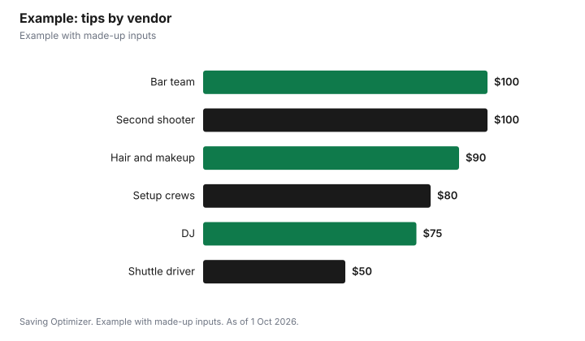

Weddings · Canada
Tipping Wedding Vendors in Canada: Service Charges vs Gratuities, Who Gets the Money and How to Budget

Before tipping wedding vendors in Canada, read each contract for a service charge. A mandatory service charge, which may appear on catering and venue bills, is part of the taxable price under CRA rules, so in Ontario 13% HST applies to it, while a voluntary tip is not taxed. Ontario's Employment Standards Act treats service charges imposed by banquet halls as tips when a reasonable person would believe the money goes to employees, and employers generally cannot keep employees' tips except through a tip pool. Ask the venue how the service charge is distributed, then decide whether to add tips for staff, and budget a fixed amount per vendor in advance, in labelled envelopes, so nobody has to calculate on the night.
Key takeaways
- Check each contract for a service charge before tipping.
- Mandatory service charges are taxable; voluntary tips are not.
- Ontario: banquet hall service charges can count as tips for employees.
- Business owners keep tips given to them; staff tips cannot be kept by employers except tip pools.
- Budget tips in advance, in labelled envelopes or by e-transfer.
- Example with made-up inputs: a tipping budget.
Service charge vs gratuity
| Mandatory service charge | Voluntary tip | |
|---|---|---|
| Set by | The venue or vendor contract | You |
| HST in Ontario | Yes, 13% | No |
| Optional? | No | Yes |
| Goes to staff? | Ask; Ontario's ESA can treat banquet hall service charges as tips | Yes, if given to staff |
| Where it appears | On the invoice | Cash, cheque or added to a card payment |
What Ontario's employment rules say
Ontario's guide to the Employment Standards Act lists, as tips or other gratuities, money left for a server, a tip added to a card payment, and gratuity or service charges imposed by banquet halls or other establishments, where a reasonable person would believe the payment would be kept by or shared among employees. An employer generally cannot withhold, deduct from or make an employee return tips, except to redistribute them in a tip pool. Employers can keep tips they receive themselves. An employer, director or shareholder can share in a tip pool only if they regularly perform to a substantial degree the same work as the employees sharing it. Employers may exclude part of a credit card processing fee from a tip, but not debit or other processing fees. Since 21 June 2024, tips must be paid by cash, cheque or direct deposit to an account the employee chooses.
Questions to ask the venue
Ask these before signing, and get the answers in writing: Is the service charge mandatory, and what percentage? Is it taxed? Does all of it go to the staff working our event, or does part cover the venue's costs? Are bartenders, kitchen staff and coordinators included? Is a gratuity already built into the per-person price or bar package? The answers tell you whether extra tips are needed and for whom. If the venue says the service charge covers its administrative costs rather than staff, a separate tip for servers and bartenders may be the only way to reach them.
Who you might tip
| Vendor | Consider |
|---|---|
| Catering and bar staff | Check the service charge first; add a tip for staff if it does not reach them |
| Delivery and setup crews (rentals, cake, flowers) | A small cash tip per person |
| Hair and makeup artists | A percentage of their bill, as in a salon |
| Drivers and shuttle operators | Check the contract for an included gratuity |
| DJ, band, photographer, videographer | Optional, especially for staff or second shooters; owners keep what they receive |
| Officiant | A thank-you gift or honorarium; ask whether they accept one |
| Planner or coordinator | Optional; a review and referral may matter more |
Amounts and methods
- Decide a fixed amount per vendor or per staff member in advance.
- Put cash in labelled envelopes and give them to one trusted person to hand out.
- E-transfer works for vendors who prefer it; send after the event with a thank-you note.
- Tips added to a card payment may have part of the credit card processing fee excluded under Ontario's rules, so cash or e-transfer can reach staff more fully.
- For a business owner, a tip goes to them; for staff, ask the owner how tips are shared.
Budgeting tips
Add a tipping line to the budget from the start, along with tax and service charges; see 2027 wedding budget. Estimating per vendor rather than as a percentage of the total keeps it predictable. Collect the cash a week before, so there are no ATM trips on the day. Keep a few spare envelopes for staff you did not expect, such as an extra server or a valet.
Thank-you alternatives
Where tipping is not expected or not accepted, a written review on the vendor's preferred site, photos they can use (with your photographer's permission), a referral to friends or a handwritten note can be worth more than cash, particularly for small business owners. Feeding vendors who work through the reception is also a practical thank-you; check whether your contract already requires vendor meals.
Checklist
- Read every contract for service charges and included gratuities.
- Ask the venue how service charges are distributed.
- List vendors and staff counts.
- Set amounts and prepare labelled envelopes or e-transfers.
- Assign one person to hand them out.
- Write reviews and notes after the wedding.
Example with made-up inputs
These numbers are an example with made-up inputs. A couple's catering bill includes a mandatory 18% service charge that the venue says goes to staff, so they add only $100 for the bar team. They also plan $20 each for four delivery and setup crew members ($80), 15% on $600 of hair and makeup ($90), $50 for the shuttle driver, $100 for the photographer's second shooter and $75 for the DJ. Total tips: $495, plus a thank-you gift card of $50 for the officiant.
| Vendor | Tip |
|---|---|
| Bar team (service charge already covers servers) | $100 |
| Delivery and setup crews (4 x $20) | $80 |
| Hair and makeup (15% of $600) | $90 |
| Shuttle driver | $50 |
| Second shooter | $100 |
| DJ | $75 |
| Total tips | $495 |
| Officiant gift card | $50 |

Common mistakes
- Tipping twice on top of a service charge that already goes to staff.
- Assuming a service charge reaches staff without asking.
- Forgetting delivery and setup crews.
- Leaving cash with no one assigned to hand it out.
- Not budgeting tips at all.
Related: catering cost per person and vendor contracts.
Sources
- Government of Ontario, Your guide to the Employment Standards Act: tips and other gratuities, ontario.ca, as of 1 Oct 2026.
- Canada Revenue Agency, GST/HST rates; GST/HST treatment of service charges and tips, canada.ca, as of 1 Oct 2026.
- Service charge rates, staff counts and tip amounts in the example are made-up inputs.
Frequently asked questions
Do I have to tip if there is a service charge?
Not necessarily. Ask the venue whether the service charge goes to staff; if it does, an extra tip is optional.
Is HST charged on a wedding service charge?
Under CRA rules a mandatory service charge is part of the taxable price, so 13% HST applies in Ontario. A voluntary tip is not taxed.
Does a banquet hall service charge go to staff in Ontario?
Ontario's ESA guide treats service charges imposed by banquet halls as tips when a reasonable person would believe they go to employees, and employers generally cannot keep employees' tips.
Should I tip a photographer who owns the business?
It is optional. Ontario's guide says employers can keep tips they receive themselves.
Is cash better than adding a tip to a card?
Ontario allows employers to exclude part of the credit card processing fee from tips added to a card, so cash or e-transfer can reach staff more fully.
How do I hand out wedding tips?
Prepare labelled envelopes and give them to one trusted person, or e-transfer after the event.
Researched and drafted with AI assistance and fact-checked against official Canadian sources. How we create content.